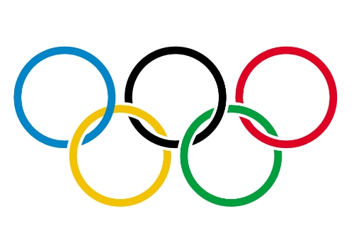

Les Jeux Olympiques...
Les Jeux Olympiques sont un un évènement international de grande ampleur ayant lieu tous les 4 ans, les années paires. Il y a les Jeux Olympiques d'été ainsi que les Jeux Olympiques d'hiver.  Les Jeux regroupent les sports pratiqués lors des 2 saisons. Chaque Jeux s'alternent tous les deux ans, c'est-à-dire qu'il y a une édition tous les deux ans et une même édition tous les quatres ans. Des athlètes de partout dans le monde y participent pour y représenter leur pays et des millions de spectateurs et de téléspectateurs les regardent. 206 pays participent aux Jeux Olympiques.